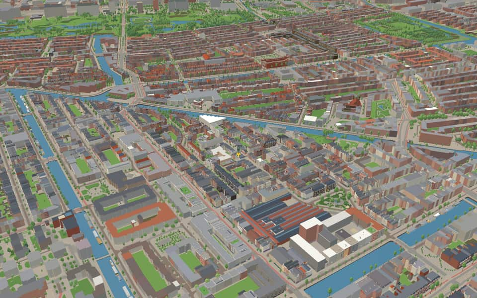
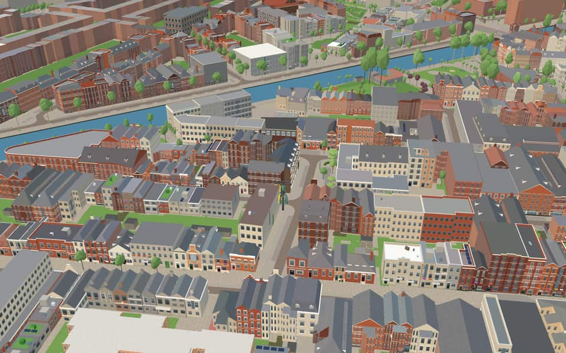
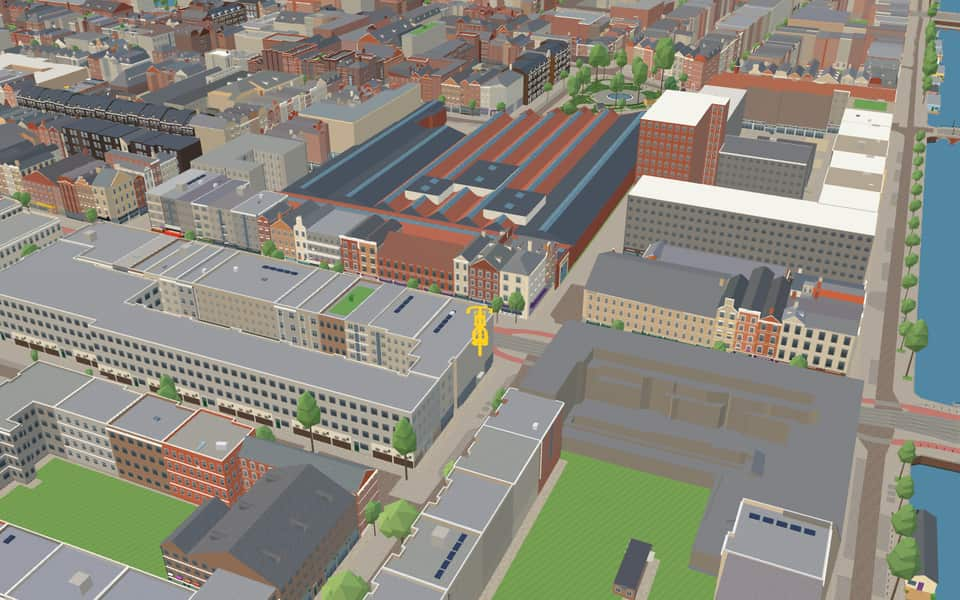
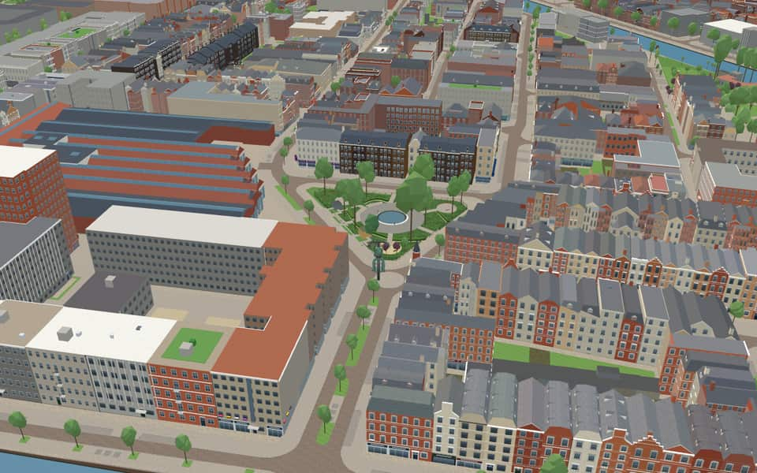

Quarter · Amsterdam
Kinkerbuurt
Kinkerbuurt is a neighborhood in Amsterdam, Netherlands. Along with the Overtoombuurt, it is part of the neighborhood of Oud-West in the borough of Amsterdam-West. It was built at the beginning of the twentieth century when Amsterdam was being expanded. Kinkerstraat, the area's main shopping street, was named after Dutch poet and lawyer Johannes Kinker. en.wikipedia.org
Ride Kinkerbuurt18 modelled buildings · 22 facts · 30 name stories


In the game
Frames from a ride through Kinkerbuurt.




6 more photos of Kinkerbuurt


.jpg){kind=link}


Built here
Buildings modelled one by one for the ride.
El Tawheed
De Hallen / Foodhallen / Filmhallen
De Waterdraagster met vissen (Bellamyplein)
- No picture yet
De Hallen
- No picture yet
Hasebroekstraat 36 to 4 (17 houses)
- No picture yet
Kinkerstraat 242 to 206 (15 houses)
- No picture yet
Hasebroekstraat 53 to 69 (9 houses)
- No picture yet
Hasebroekstraat 70 to 56 (8 houses)
- No picture yet
Bellamydwarsstraat 12 to 4 (5 houses)
- No picture yet
Bellamyplein 38 to 30 (5 houses)
- No picture yet
Hasebroekstraat 11 to 19 (5 houses)
- No picture yet
Ten Katestraat 13 to 21 (5 houses)
- No picture yet
Bellamyplein 26 to 20 (4 houses)
- No picture yet
Hasebroekstraat 1 to 7 (4 houses)
- No picture yet
Hasebroekstraat 94 to 90 (3 houses)
- No picture yet
Kinkerstraat 380 to 376 (3 houses)
- No picture yet
Jan Pieter Heijestraat 49 to 51 (2 houses)
- No picture yet
Van Effenstraat 10 to 8 (2 houses)
Did you know
Trivia the ride can show you here.
- An early-20th-century district whose streets commemorate writers and poets. Wikipedia
- The city tram opened the Tollensstraat depot in 1902. Wikipedia
- In 2005 the Kinkerbuurt had the highest address density in the Netherlands, 11,971 addresses per square kilometre. Its daily market is on the Ten Katestraat. Wikipedia (translated from Dutch)
- De HallenThe tram depot operated until 1996 before becoming a hub for various tenants. nl.wikipedia.org
- De HallenThe Amsterdam Public Transport Museum occupied the site until 2005. nl.wikipedia.org
- De HallenOne Filmhallen room recreates the interior of the former Cinema Parisien from Nieuwendijk. nl.wikipedia.org
- De HallenA public passage runs parallel to Kinkerstraat, connecting all spaces except the hotel. nl.wikipedia.org
- El TawheedFunding came in part from the Saudi NGO al-Haramain Foundation. en.wikipedia.org
- FilmhallenThe cinema opened on September 4, 2014, debuting with the Dutch film Nena. nl.wikipedia.org
- FilmhallenKadir Selçuk and Alex Rutten of The Movies operate this movie theater. nl.wikipedia.org
- FilmhallenFilmhallen participates in the Cineville partnership connecting various cinemas. nl.wikipedia.org
- FilmhallenThe cinema opened its doors on October 22, 2014 after the interior was stored since 2012. nl.wikipedia.org
- P.W. JanssenThe bronze bust was sculpted by Bart van Hove and unveiled in 1908. nl.wikipedia.org
- P.W. JanssenA tapered base of Norwegian granite supports the four-meter tall monument. nl.wikipedia.org
8 more facts
- P.W. JanssenJanssen's statue was temporarily removed between 1954 and 1955 during a fountain replacement. nl.wikipedia.org
- waterdraagsterThe central bronze figure was stolen in 1977 and replaced with a new cast in 1981. nl.wikipedia.org
- waterdraagsterAlthough called the largest image, the central bronze woman is only 84 cm high. nl.wikipedia.org
- BellamypleinTwo massive winged nut trees, planted in 1933, tower over the square at heights of up to eighteen meters. nl.wikipedia.org
- WiegbrugA tanker once jammed between the banks for four hours in August 1966. nl.wikipedia.org
- WiegbrugA rolling bascule bridge of this specific type was originally built at this location in 1904. nl.wikipedia.org
- BilderdijkgrachtCatholics once bought bread at the Assumptio bakery complex opposite a warehouse entrance. nl.wikipedia.org
- BilderdijkgrachtThe canal honors Willem Bilderdijk, a noted poet and historian. nl.wikipedia.org
Names on the map
Where the canal, bridge and street names come from.
Canals and water
- BilderdijkgrachtWillem Bilderdijk (1756-1831), poet and historian. Bilderdijk went against the complacent spirit of his time, which made him a highly controversial figure. The name Bilderdijkstraat originally applied as far as the Vondelstraat. That section, from the Jacob van Lennepkade onwards, is now called Eerste Constantijn Huygensstraat (council decision of 21 March 1894). The Bilderdijkpark (park and street) was laid out on the site of the cemetery of the former Roman Catholic church 'De Liefde'.
Bridges
- WiegbrugThis bascule bridge is named after the type of bridge it originally was: a wiegbrug (cradle bridge) is a rolling bascule bridge.Bridge 173: a movable steel bridge.
Streets
- Agatha DekenstraatAagje Deken (1741-1804), writer. Together with Betje Wolff she wrote novels, including 'Sara Burgerhart' and 'Willem Leevend'.
- BellamydwarsstraatJacobus Bellamy (1757-1786), poet, originally a baker's assistant. Until 1896, part of the street and the side street belonged to the municipality of Nieuwer-Amstel, under the names Nieuwe Weteringstraat (Nieuwer-Amstel council decision of 27 April 1888) and Nieuwe Weteringdwarsstraat (Nieuwer-Amstel council decision of 11 June 1891).
- BellamypleinJacobus Bellamy (1757-1786), poet, originally a baker's assistant. Until 1896, part of the street and the side street belonged to the municipality of Nieuwer-Amstel, under the names Nieuwe Weteringstraat (Nieuwer-Amstel council decision of 27 April 1888) and Nieuwe Weteringdwarsstraat (Nieuwer-Amstel council decision of 11 June 1891).
- BellamystraatJacobus Bellamy (1757-1786), poet, originally a baker's assistant. Until 1896, part of the street and the side street belonged to the municipality of Nieuwer-Amstel, under the names Nieuwe Weteringstraat (Nieuwer-Amstel council decision of 27 April 1888) and Nieuwe Weteringdwarsstraat (Nieuwer-Amstel council decision of 11 June 1891).
- BilderdijkkadeWillem Bilderdijk (1756-1831), poet and historian. Bilderdijk went against the complacent spirit of his time, which made him a highly controversial figure. The name Bilderdijkstraat originally applied as far as the Vondelstraat. That section, from the Jacob van Lennepkade onwards, is now called Eerste Constantijn Huygensstraat (council decision of 21 March 1894). The Bilderdijkpark (park and street) was laid out on the site of the cemetery of the former Roman Catholic church 'De Liefde'.
- De ClercqstraatWillem de Clercq (1795-1844), man of letters, one of the leading figures of the 'Réveil' (a Protestant revival movement), and also director of the Nederlandsche Handel-Maatschappij. The road was laid over the former Bleekerssloot.
- DichtershofjeA reference to the overall theme of the street names in the neighbourhood (poets' courtyard). Many eighteenth- and nineteenth-century poets and writers in particular are commemorated in the immediate surroundings of this courtyard.
- Douwes DekkerstraatEduard Douwes Dekker (1820-1887), pen name Multatuli. An Amsterdammer who went to the East Indies in 1838, where he became a colonial administrator, resigned after a conflict, and then devoted himself to writing. A forerunner of the Tachtigers (the Movement of the Eighties). His works include 'Max Havelaar' and 'Woutertje Pieterse'. The Multatuli Museum is in the house where he was born, on the Korsjespoortsteeg.
- Elisabeth WolffstraatElisabeth Wolff, née Bekker (Betje Wolff) (1738-1804), writer. With Aagje Deken she wrote, among others, 'Sara Burgerhart' and 'Willem Leevend'.
- Hannie DankbaarpassageHenriëtte Christine Jaqueline Dankbaar (1952-2007), politician, the first GroenLinks district chair in Amsterdam (Oud-West, 1990-2002). She came from the PSP and was loved for her great social commitment.
- HasebroekstraatJohannes Petrus Hasebroek (1812-1896), minister and writer. Under the pseudonym Jonathan he wrote, among other things, 'Waarheid en droomen' (truth and dreams).
- Jan HanzenstraatA landowner who in 1564 bought a piece of land on condition that he maintain a path running along it, which was therefore called the Jan Hanzenpad. The path lay partly in Nieuwer-Amstel and ran from the Singel to the Kostverlorenwetering. Later its remnants were called Jan Hanzenstraat and Jan Hanzenkade. In 1904 the quay was renamed Agatha Dekenstraat.
16 more streets with a story
- Jan Pieter HeijestraatAmsterdam physician and poet (1809-1876). He founded the Society for Nursing in 1844, was for thirty years director of Toonkunst, and promoted community singing. He wrote the popular children's songs 'De Zilvervloot' (the silver fleet), 'Kabels los' and 'Vlaggelied'.
- KinkerstraatJohannes Kinker (1764-1845), poet, philosopher and lawyer in Amsterdam and The Hague. From 1817 until the Belgian Revolution of 1830 he was professor of Dutch language and literature at the new university of Liège, and argued for the unity of the northern and southern Netherlands. He was one of the first to introduce Kant's philosophy in the Netherlands, and was best known as a poet for his parodies. The street was named after him in 1881.
- Korte BlekersstraatCalled Korte Blekerspad before 1911, after the bleaching fields (blekerijen) there in the eighteenth century, along the Blekerssloot.
- Korte SchimmelstraatHendrik Jan Schimmel (1825-1906), bank director, known as a novelist and playwright and also editor of 'De Gids'. These streets came into Amsterdam in 1896 with the names set by Nieuwer-Amstel, Van Speyckstraat and Van Speyckdwarsstraat, but were renamed in 1922, after the annexation of Sloten brought a second Van Speyckstraat within the city boundary.
- KwakersstraatAfter the former Kwakerspoel and Kwakerseiland, names first recorded here around 1680. The name probably comes from the sect of the Quakers (kwakers). Followers of this sect, whose principles were first preached in Amsterdam around 1656, were expelled from the city, so they met at this remote spot outside the city boundary. In 1674 they were allowed to meet in a house on the Keizersgracht. The name de Bijkerk (the side church), borne by one of the mills that stood here, also supports this explanation. Another explanation is the old word 'kwakel', the name for a high, narrow wooden bridge that still survives in Noord-Holland.
- Nicolaas BeetsstraatMan of letters and writer (1814-1903), who as a student wrote the celebrated 'Camera Obscura' under the pseudonym Hildebrand.
- SchimmelstraatHendrik Jan Schimmel (1825-1906), bank director, known as a novelist and playwright and also editor of 'De Gids'. These streets came into Amsterdam in 1896 with the names set by Nieuwer-Amstel, Van Speyckstraat and Van Speyckdwarsstraat, but were renamed in 1922, after the annexation of Sloten brought a second Van Speyckstraat within the city boundary.
- Smederij MeisterbrugA family business (the Meister smithy) in the Bellamybuurt, founded in 1909.
- Ten KatestraatJan Jacob Lodewijk ten Kate (1819-1889), minister and poet, who also translated Goethe, Dante and Andersen. Widely read at first, he was pushed aside after the movement of the Tachtigers (the Eighties poets).
- TolbrugstraatAfter the toll gate (tol) on the corner of today's Tolstraat and the Amsteldijk. The toll was levied from about 1780 until the area was annexed in 1896, for the upkeep of the Amsteldijk from this point to Ouderkerk. Before the annexation the street was called Verversstraat (council decision of Nieuwer-Amstel, 11 February 1886).
- TollensstraatHendrik Frederik Tollens (1780-1856), Rotterdam merchant who became known as a popular poet.
- Tweede KostverlorenkadeAfter the Kostverlorenwetering, dug in 1413 to give a shorter waterway to the Haarlem and Leiden lakes. According to some, the name Kostverloren (cost lost) comes from the heavy legal costs of this channel, which was a bone of contention between Amsterdam and Haarlem until 1609. The name Kostverloren occurs in several places in the Netherlands.
- Van AlphenstraatHiëronymus van Alphen (1746-1803), poet, best known for his children's verse.
- Van EffenstraatJustus van Effen (1684-1735), man of letters, whose work includes a French translation of Defoe's 'Robinson Crusoe'.
- WenslauerstraatProbably the name of a landowner or builder who built here. Before 1896 this street belonged, under the same name, to the municipality of Nieuwer-Amstel.
- WiegbrugThis bascule bridge is named after the type of bridge it originally was: a wiegbrug (cradle bridge) is a rolling bascule bridge.